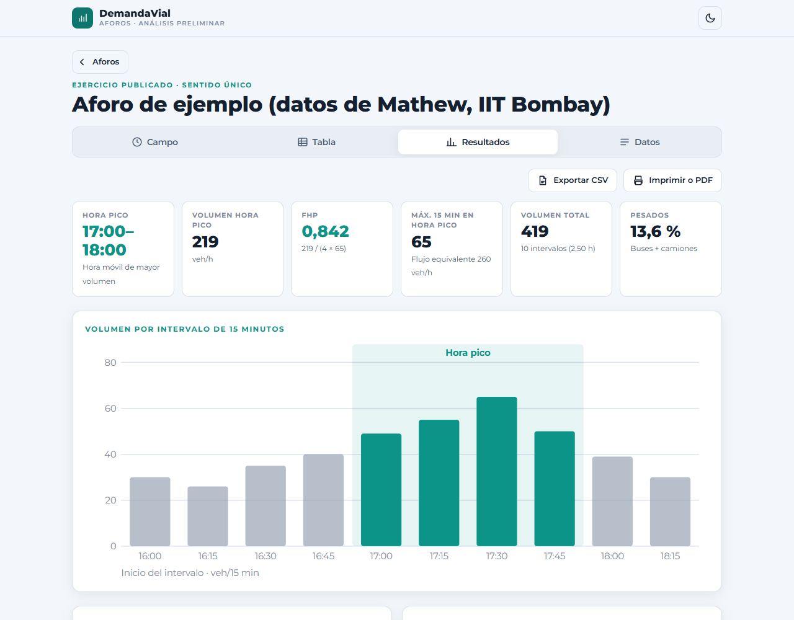
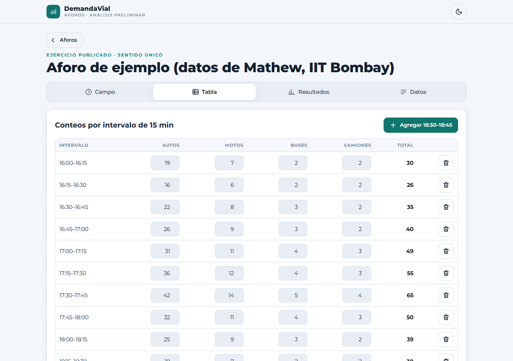
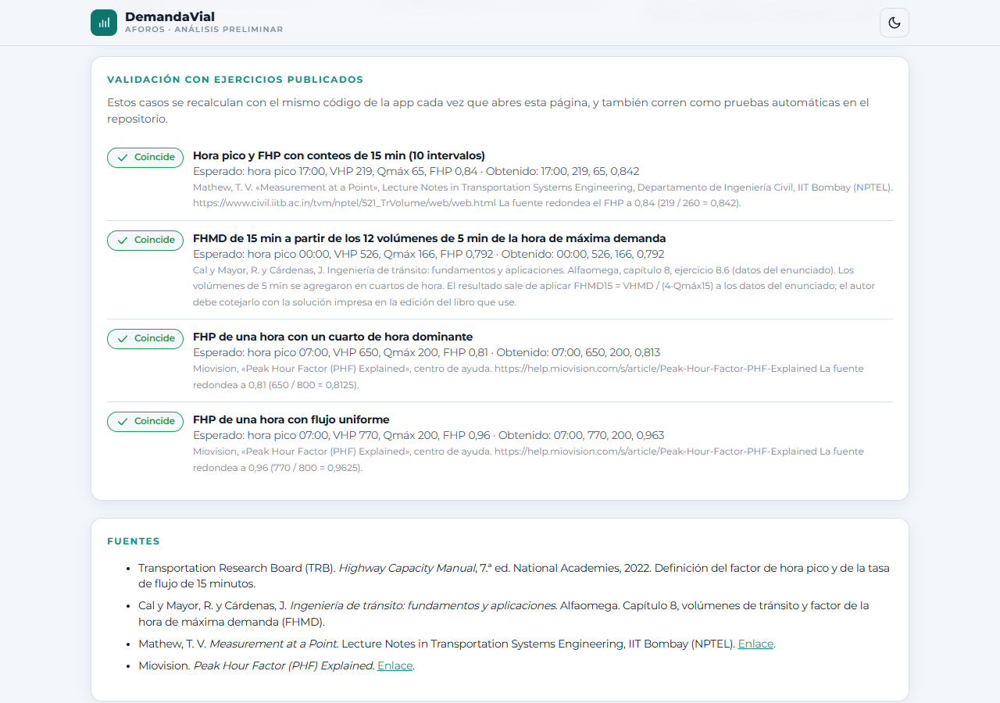

DemandaVial – Análisis preliminar de aforos y demanda de tránsito
Soporte de producto: software · 2026 · Colombia
| Nombre del software | DemandaVial – Herramienta de análisis preliminar de aforos y demanda de tránsito |
| Año y país | 2026 · Colombia |
| Autor | Julián García |
| Tipo | Aplicación web (software de uso libre, sin registro, licencia MIT) |
| Estado | Funcional y publicado. Cálculos validados con cuatro ejercicios resueltos de fuentes publicadas, que corren como pruebas automáticas y se muestran en la propia aplicación. |
| Enlace público | https://demandavial.netlify.app |
| Repositorio | https://github.com/jgvrxiv/demandavial |
Descripción
Herramienta digital para registrar y analizar aforos vehiculares por intervalos de 15 minutos. Permite contar en campo desde el celular o digitar conteos ya hechos, y calcula automáticamente el volumen por intervalo, el volumen horario móvil, la hora pico (los cuatro cuartos de hora consecutivos de mayor volumen), el factor de hora pico (FHP), la composición vehicular y el porcentaje de vehículos pesados, además de una proyección de la demanda presentada como estimación. Es una herramienta preliminar y académica: no reemplaza un estudio de tránsito ni constituye verificación normativa.
Funcionalidades
- Captura en campo con botones grandes por tipo de vehículo (autos, motos, buses, camiones), intervalo automático según la hora y opción de deshacer.
- Captura digitada en tabla por intervalos de 15 minutos, con relleno de intervalos faltantes.
- Hora pico móvil y FHP = VHP / (4 × Qmáx15), con Qmáx15 tomado dentro de la hora pico.
- Composición vehicular del aforo completo y de la hora pico, y porcentaje de pesados (buses + camiones).
- Proyección V·(1+i)n con tasa y horizonte del usuario, señalada como estimación; vehículos equivalentes opcionales solo con factores y fuente que ingresa el usuario.
- Gráfica propia de volumen por intervalo con la hora pico resaltada, tabla resumen, impresión o PDF y exportación a CSV.
- Varios aforos guardados con nombre, lugar, fecha y sentido; tema oscuro y claro; funciona sin servidor ni cuentas.
Tecnologías
- HTML, CSS y JavaScript sin frameworks ni dependencias externas; gráfica en SVG generada por la aplicación.
- Almacenamiento local del navegador (localStorage).
- Pruebas automáticas con Node.js (node:test) sobre el mismo módulo de cálculo que usa la aplicación.
- Control de versiones con Git y GitHub; publicación continua en Netlify.
Rol del autor
Concepción del producto, diseño funcional, definición de las reglas técnicas de cálculo (hora pico móvil, FHP, composición, proyección y criterio de no usar factores sin fuente), selección de las fuentes bibliográficas, validación con ejercicios resueltos y pruebas, y dirección del desarrollo. La implementación se realizó con asistencia de inteligencia artificial (Claude, de Anthropic).
Validación y fuentes
- Mathew, T. V. Measurement at a Point, IIT Bombay (NPTEL): hora pico 17:00–18:00, VHP 219, FHP 0,84. Coincide.
- Cal y Mayor, R. y Cárdenas, J. Ingeniería de tránsito: fundamentos y aplicaciones, Alfaomega, ej. 8.6: FHMD15 0,792 con los datos del enunciado.
- Miovision, Peak Hour Factor (PHF) Explained: dos casos, FHP 0,81 y 0,96. Coinciden.
- Definición del FHP: Transportation Research Board, Highway Capacity Manual, 7.ª ed., 2022.
Evidencia de autoría
- Repositorio público con historial de versiones (commits) registradas a nombre del autor.
- Aplicación publicada y accesible en el enlace indicado.
- Documentación técnica en el mismo repositorio (README.md y CLAUDE.md) y casos de prueba en casos.js y tests/.
Evidencia de funcionamiento
Capturas de la versión publicada en https://demandavial.netlify.app, con los datos del ejercicio publicado de Mathew (IIT Bombay).

1. Resultados: hora pico móvil 17:00–18:00, FHP = 219 / (4 × 65) = 0,842 y gráfica de volumen por intervalo con la hora pico resaltada.
2. Captura en campo desde el celular: intervalo automático y botones +1.

3. Captura digitada por intervalos de 15 minutos.

4. «Validación»: los ejercicios publicados se recalculan con el código de la app.
Julián García · 2026